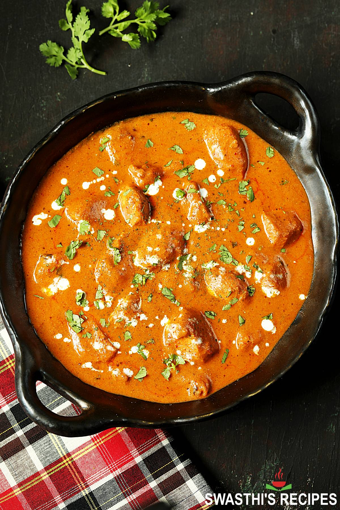

home

a hearty dish known for it's incredible flavor and tender chicken , perfect for all occasions
ingredients:
- 1/2 cup plain yoghurt , full fat
- 1 tbsp lemon juice
- 1 tsp tumeric powder
- 2 tsp garam masala
- 1/2 tsp chilli powder or cayenne pepper powder
- 1 tsp ground cumin
- 1 tbsp ginger, freshly grated
- 2 cloves garlic, crushed
- 1.5 lb / 750 g chicken thigh fillets, cut into bite size pieces
- 2 tbsp (30 g) ghee or butter
- 1 cup tomato passata (aka tomato puree)
- 1 cup heavy / thickened cream
- 1 tbsp sugar
- 1 1/4 tsp salt
steps:
- prepare the marinate by mixing the yoghurt , lemon juice , tumeric,garam masala,chili powder,ground cumin,grated ginger and crushed garlic.
- cut the chicken into bite sized cubes and thoroughly cover in the marinate , cover and let marinate for at least 30 minutes but preferably over night.
- in an oiled pan over high heat add your marinated chicken and cook until it's halfway done then remove and set to the side .
- in the same pan on medium heat , toast your masala spice mix until fragrant,then add the tomato passata , cook for 7-10 minuets then add your chicken and heavy cream and cook for another 15 minuets.
- after its done cooking , serve it with jasmine or basmati rice .